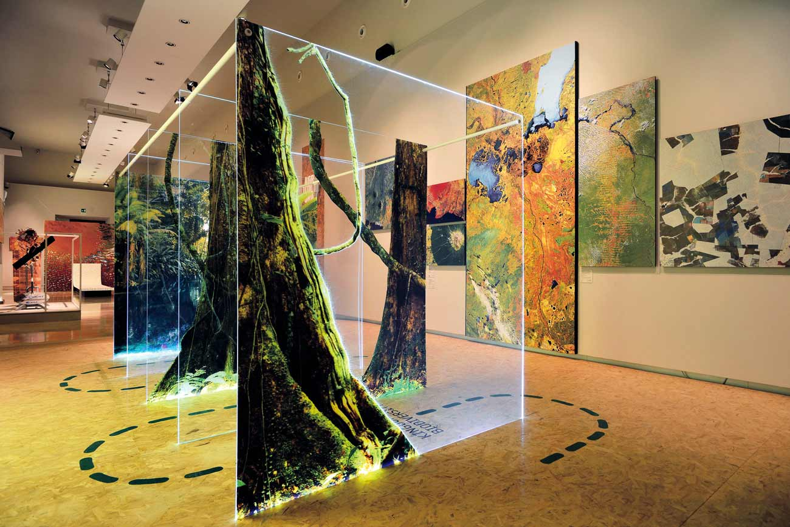
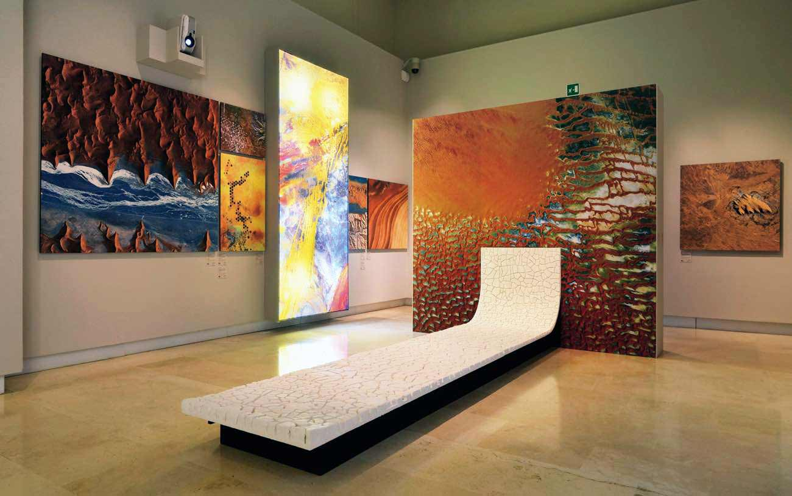
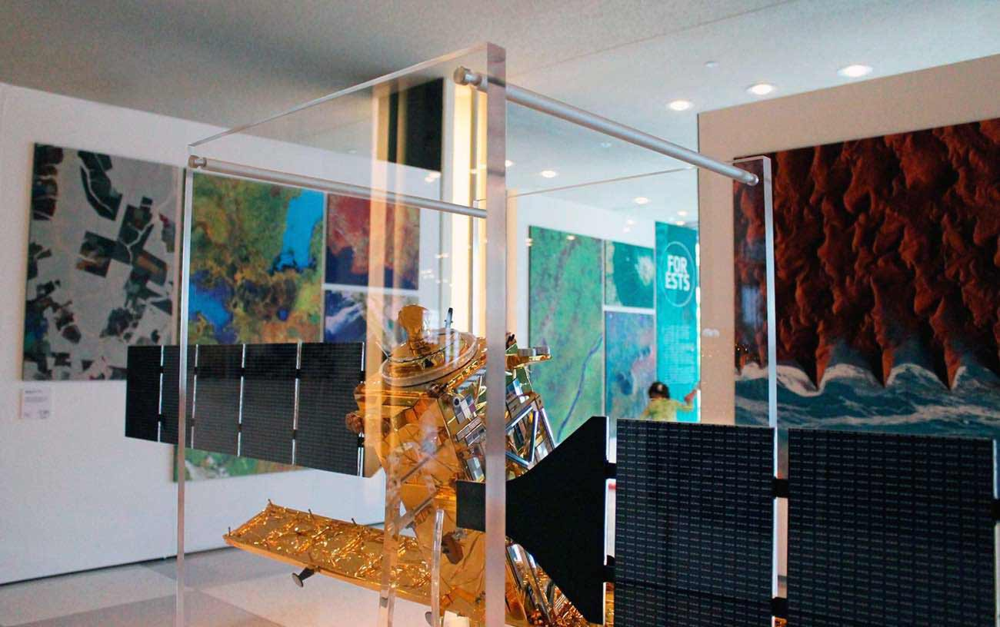

Through satellite images and video installations, the exhibition takes visitors on a journey to some of the most beautiful and remote places on Earth, showing the fragility of our planet and the challenges posed by climate change.
Agency
Vertigo Design
Client
European Space Agency (ESA)
Timeframe
Apr–Aug 2014
The vision
Celebrating sustainability and technology
On the occasion of its 50th anniversary, the European Space Agency (ESA) wanted to make an exhibition out of its satellite images, to increase awareness towards a more sustainable lifestyle and highlight the potential of space technology. The selected location was Palazzo delle Esposizioni, the largest interdisciplinary exhibition area in the centre of Rome.
The poster of the exhibition at the entrance of the Palazzo delle Esposizioni, Rome.
My role and the team
An agile and multidisciplinary team
I was the lead designer for the exhibition held in Rome (Palazzo delle Esposizioni, Sep–Nov 2014) and its identity, including posters and flyers. I worked together with the art director M. Rullo, another designer, and an architect, in addition to the curator from ESA.
The section about forests of the exhibition in Rome.
After I left the agency to work for Runtastic, the exhibition was adapted for the National Museum of Science and Technology in Milan (May 2015–Jan 2016, to coincide with Expo 2015) and the United Nations General Assembly building in New York (Jul–Sep 2015).
The section about deserts of the exhibition in Rome, featuring an installation by the artist and designer Marco Vagnini.
The exhibition
Fragility and beauty of the Earth
The exhibition revolves around the opposition of fragility and beauty of the planet, and is divided into six main areas: Ice, Water, Atmosphere, Forests and Agriculture, Deserts, and Cities. To make the exhibition more engaging for a younger audience, we decided to use an array of different media, including interactive installations, scale models of satellites, and videos, in addition to the large satellite images ESA provided us with.
“Fragility and beauty” in the exhibition in Rome.One of the scale models of satellites in New York.
The satellite images on display are incredibly striking and have a strong visual impact, aimed at creating a dramatic contrast with the actual situations and inviting visitors to the exhibition to reflect on the fragility of our planet, caused by global climate change.
The section about forests of the exhibition in New York.
Outcomes
An international success story
The exhibition in Rome was really appreciated by the public and covered extensively in the press. After I left Vertigo Design, the exhibition was adapted for the National Museum of Science and Technology in Milan (during Expo 2015), the United Nations Headquarters in New York (Jul–Sep 2015), and the Palais de la Découverte in Paris (Dec 2015–Jun 2016).
“The exhibition at the United Nations Headquarters in New York.
“My planet from space” has also won multiple awards, and was included in the renowned ADI Design Index, the publication by the Italian Association for Industrial Design that collects the best of Italian design.
The entrance of the Palazzo delle Esposizioni in Rome.All the photos on this page are by Vertigo Design and F. Costantini.